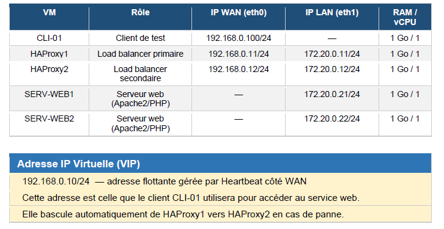
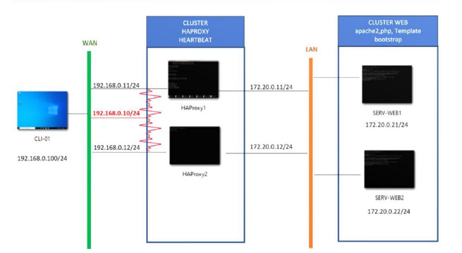

Cluster Web Haute Disponibilité : HAProxy & Heartbeat
Mise en place d'une infrastructure web résiliente à tolérance de panne avec répartition de charge HTTP (Load Balancing Round-Robin) et basculement automatique d'IP virtuelle (VIP / Failover actif-passif).
Dans le cadre de ma formation en BTS SIO à l'école IRIS, ce projet a consisté à concevoir et déployer une architecture web à haute disponibilité éliminant tout point unique de défaillance (Single Point of Failure - SPOF).
Le projet répond aux enjeux majeurs de disponibilité en entreprise :
- Enjeu économique : Éviter les pertes d'activité dues aux interruptions de service (downtime) et respecter les contrats de niveau de service (SLA).
- Enjeu technique : Garantir la continuité de service via la redondance matérielle et la bascule automatique (failover/failback) sans intervention humaine.
- Enjeu de sécurité : Absorber les pics de charge et isoler les serveurs web applicatifs en réseau interne privé (LAN).
L'infrastructure comprend 5 machines virtuelles orchestrées sur deux réseaux distincts (VMnet) sous VMware Workstation :

| Machine | Rôle | IP WAN (eth0) | IP LAN (eth1) | Ressources |
|---|---|---|---|---|
| CLI-01 | Poste client de test (Windows) | 192.168.0.100/24 | — | 1 Go / 1 vCPU |
| HAProxy1 | Load balancer primaire (Master) | 192.168.0.11/24 | 172.20.0.11/24 | 1 Go / 1 vCPU |
| HAProxy2 | Load balancer secondaire (Backup) | 192.168.0.12/24 | 172.20.0.12/24 | 1 Go / 1 vCPU |
| SERV-WEB1 | Serveur web (Apache2 / PHP) | — | 172.20.0.21/24 | 1 Go / 1 vCPU |
| SERV-WEB2 | Serveur web (Apache2 / PHP) | — | 172.20.0.22/24 | 1 Go / 1 vCPU |
| VIP Cluster | Adresse IP Virtuelle flottante (Heartbeat) | 192.168.0.10/24 | Point d'accès client WAN | Bascule auto |
-
1Configuration réseau & connectivité : Définition des commutateurs virtuels VMnet (Host-only), segmentation WAN/LAN et tests de connectivité ICMP (ping).
-
2Déploiement des backends Apache2 & PHP : Installation des serveurs web, intégration du template applicatif "The Grill" avec Bootstrap CDN, et personnalisation des titres pour identifier le serveur répondant.
-
3Configuration du Load Balancing HAProxy : Paramétrage du frontend port 80 en round-robin, sondes d'intégrité (health-checks) régulières sur les backends et activation du tableau de bord de statistiques.
-
4Cluster Heartbeat & IP Virtuelle (VIP) : Configuration de
ha.cf(keepalive 5s, deadtime 30s, auto_failback on),haresources(attribution de la VIP 192.168.0.10) et sécurisation des échanges viaauthkeys(md5).
Une série de 4 tests approfondis a été conduite depuis le poste client CLI-01 pour valider l'étanchéité et la continuité de service :

| Test | Scénario testé | Comportement observé | Résultat |
|---|---|---|---|
| 1. Round-Robin | Accès client répété à l'URL de la VIP (192.168.0.10) | Alternance parfaite des réponses entre SERV-WEB1 et SERV-WEB2 | Validé |
| 2. Panne HAProxy1 | Arrêt forcé du service Heartbeat sur le nœud primaire | Bascule immédiate de la VIP sur HAProxy2, coupure invisible (1 paquet perdu) | Validé |
| 3. Health-Check Web | Arrêt du service Apache2 sur SERV-WEB1 | Passage en rouge (DOWN) dans les stats, 100% du trafic rerouté vers SERV-WEB2 | Validé |
| 4. Failback auto | Redémarrage du nœud primaire HAProxy1 | Reprise automatique de la VIP par HAProxy1 sans interruption pour l'utilisateur | Validé |